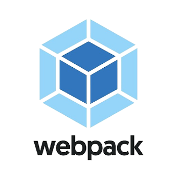

Hello i'm the WebPack

WebPack
É um empacotador de módulos gratuitoe de código aberto para JS. Más pode transformar ativos como HTML e CSS e também imagens.
Direcionamento
Ele é responsável pelo direcionamento de seus ativos para um gráfico de dependência.
Recurso moderno
Assim como o gul e outros o webpack é considerado moderno e veio realmente para ficar e revolucionar de forma simples e objetiva um projeto.